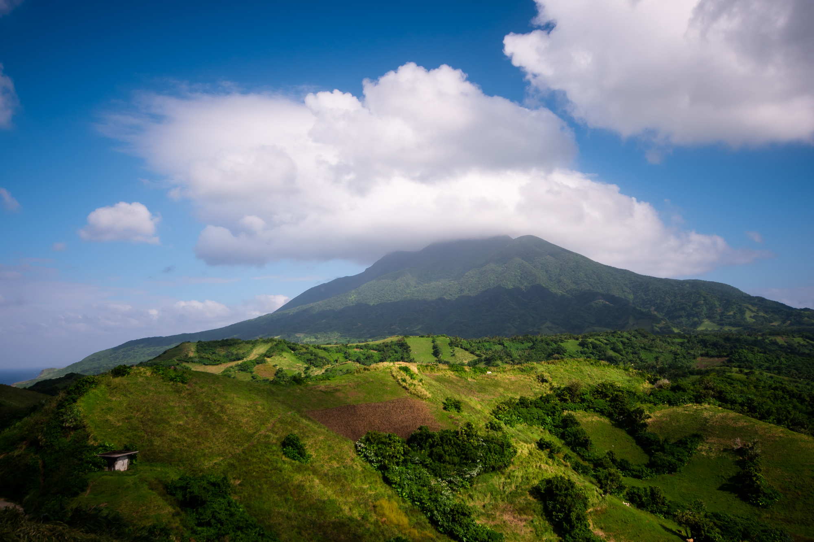
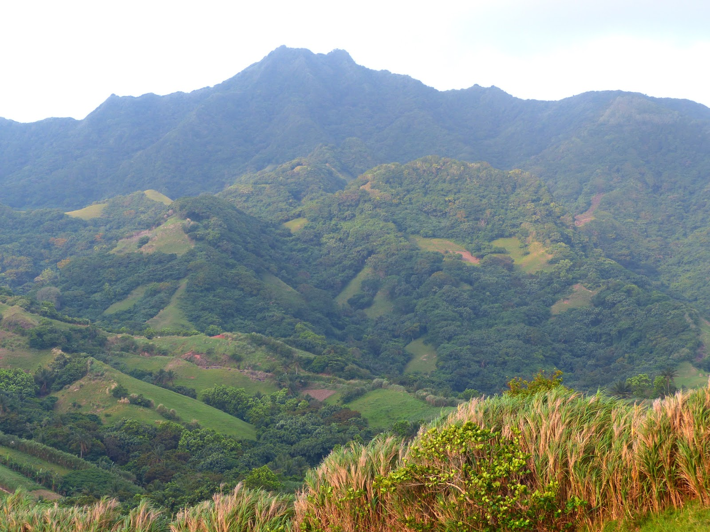
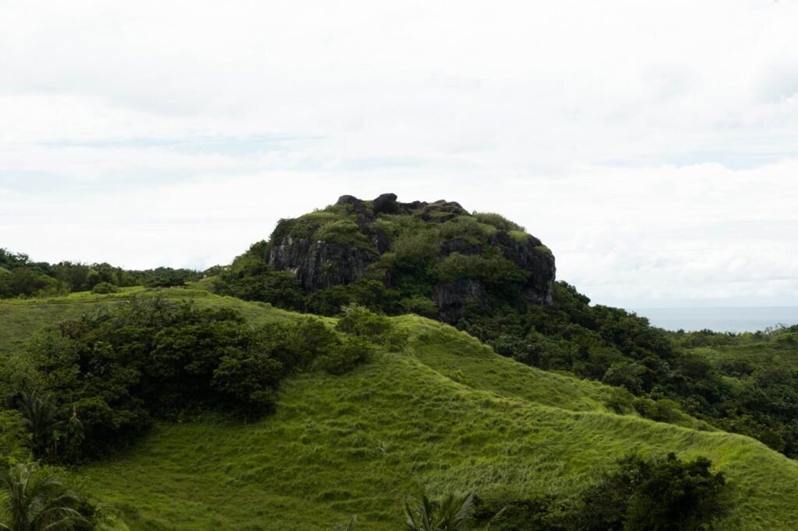
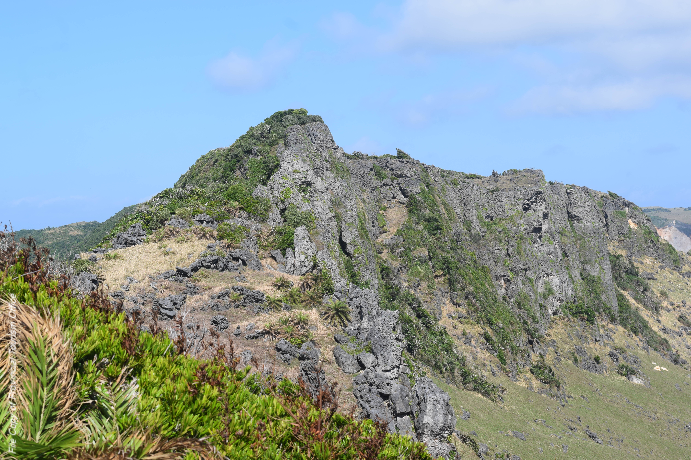

Mt. Iraya Hike

Embark on a challenging trek up Batanes' iconic dormant volcano, Mt. Iraya. The journey begins just beyond Basco Airport, leading you through dense forests teeming with unique flora and fauna. After approximately two hours, you'll reach the summit, offering panoramic views of the island and the West Philippine Sea. A permit from the DENR is required, and hiring a local guide is strongly recommended for safety.
Mt. Matarem

Mount Matarem is a prominent natural landmark in Batanes, Philippines, located on the southern part of Batan Island. This extinct volcano rises approximately 495 meters above sea level and is nestled among the municipalities of Ivana, Mahatao, and Uyugan. The name "Matarem" is derived from the Ivatan word meaning "steep," aptly describing its challenging terrain.
Didawud Idjang

Didawud Idjang is a significant historical and geological landmark located approximately 3 kilometers southeast of Basco, the capital of Batanes, Philippines. Elevated about 100 meters above sea level, this natural fortress offers panoramic views of the surrounding landscape and the ocean .
Rapang Cliff

A natural park comprised of forest, cliffs and rocky hills where bonsai arius trees abound along a grazing area for goats. A unique formation is a flat stone which lies naturally upon another stone, which, when you strike with another stone produces a bell-like sound. Accordingly, it served as an alarm for the ancient inhabitants against approaching enemies, and a signal for community meetings and for gathering goats.